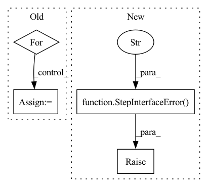

Pattern ID :10906
Before Change
if self.CONFIG:
// Find the config
for v in kwargs.values():
if isinstance(v, BaseStepConfig):
config = v
try:
// create a pydantic model out of a primitive type
model_dict = config.dict() // noqa
self.PARAM_SPEC = {
k: json.dumps(v) for k, v in model_dict.items()
}After Change
maximum_kwarg_count = 1 if self.CONFIG else 0
if len(kwargs) > maximum_kwarg_count:
raise StepInterfaceError(
f"Too many keyword arguments ({len(kwargs)}, "
f"expected: {maximum_kwarg_count}) passed when "
f"creating a "{self.step_name}" step."
)
if self.CONFIG and len(kwargs) == 1:
config = kwargs.popitem()[1]
In pattern: SUPERPATTERN
Frequency: 3
Non-data size: 4
Instances Fragment ID: 37704047
Project Name: maiot-io/zenml
Commit Name: 487e6731441e4bf29df9a8e9c3bcbaaedbfd07eb
Time: 2021-10-18
Author: michael.schuster.ffb@googlemail.com
File Name: src/zenml/steps/base_step.py
M Class Name: BaseStep
N Class Name: BaseStep
M Method Name: __init__(1)
N Method Name: __init__(1)
M Parent Class:
N Parent Class:
M File Name: src/zenml/steps/base_step.py
N File Name: src/zenml/steps/base_step.py
M Start Line: 138
M End Line: 161
N Start Line: 140
N End Line: 170
Before Change
instance_args = instance_spec.args
instance_args.pop(0) // Remove the self
for param in instance_args:
param_type = instance_spec.annotations.get(param, None)
if param_type in [int, float, str, bytes, bool]:
self.__param_spec.update({param: param_type})
else:After Change
def __init__(self, *args, **kwargs):
if args:
raise StepInterfaceError("" ) // TODO: fill
self.__component = None
self.__params = dict() Fragment ID: 37704043
Project Name: maiot-io/zenml
Commit Name: 018c5dfb718e7cebff929ade91aefca70afea81f
Time: 2021-08-05
Author: bariscandurak@hotmail.com
File Name: playground/steps/base_step.py
M Class Name: BaseStep
N Class Name: BaseStep
M Method Name: __init__(1)
N Method Name: __init__(1)
M Parent Class:
N Parent Class:
M File Name: playground/steps/base_step.py
N File Name: playground/steps/base_step.py
M Start Line: 10
M End Line: 60
N Start Line: 12
N End Line: 47
Before Change
if self.CONFIG:
// Find the config
for v in kwargs.values():
if isinstance(v, BaseStepConfig):
config = v
try:
// create a pydantic model out of a primitive type
model_dict = config.dict() // noqa
self.PARAM_SPEC = {
k: json.dumps(v) for k, v in model_dict.items()
}After Change
config = kwargs.popitem()[1]
if not isinstance(config, BaseStepConfig):
raise StepInterfaceError(
f"`{config}` object passed when creating a "
f""{self.step_name}" step is not a valid configuration "
f"object. Only `{BaseStepConfig}` instances are "
f"allowed arguments when creating a step."
)
try:
self.PARAM_SPEC = {
k: json.dumps(v) for k, v in config.dict().items() Fragment ID: 37704054
Project Name: maiot-io/zenml
Commit Name: 487e6731441e4bf29df9a8e9c3bcbaaedbfd07eb
Time: 2021-10-18
Author: michael.schuster.ffb@googlemail.com
File Name: src/zenml/steps/base_step.py
M Class Name: BaseStep
N Class Name: BaseStep
M Method Name: __init__(1)
N Method Name: __init__(1)
M Parent Class:
N Parent Class:
M File Name: src/zenml/steps/base_step.py
N File Name: src/zenml/steps/base_step.py
M Start Line: 138
M End Line: 161
N Start Line: 140
N End Line: 170
Before Change
// Infer the defaults
process_defaults = process_spec.defaults
if process_defaults is not None:
for i, default in enumerate(process_defaults):
// TODO: [HIGH] fix the implementation
process_args.reverse()
arg = process_args[i]
arg_type = process_spec.annotations.get(arg, None)
if not isinstance(arg_type, Param):
raise StepInterfaceError(After Change
process_defaults = process_spec.defaults
if process_defaults is not None:
raise StepInterfaceError(
"The usage of default values for "
"parameters is not fully implemented yet."
"Please do not use default values in "
"your step definition."
)
// for i, default in enumerate(process_defaults):
// // TODO: [HIGH] fix the implementation
// process_args.reverse()
// arg = process_args[i] Fragment ID: 37704048
Project Name: maiot-io/zenml
Commit Name: cfaf64a733041271d1b3710307c0ea561f190f70
Time: 2021-09-30
Author: bariscandurak@hotmail.com
File Name: src/zenml/steps/base_step.py
M Class Name: BaseStepMeta
N Class Name: BaseStepMeta
M Method Name: __new__(4)
N Method Name: __new__(4)
M Parent Class: type
N Parent Class: type
M File Name: src/zenml/steps/base_step.py
N File Name: src/zenml/steps/base_step.py
M Start Line: 17
M End Line: 59
N Start Line: 19
N End Line: 61